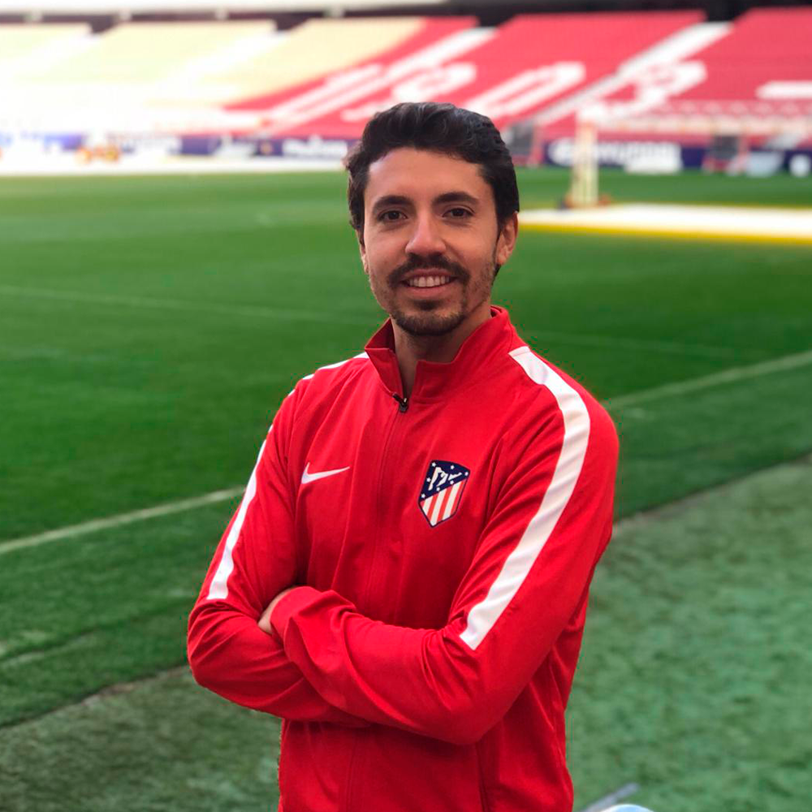

Ernesto Dominguez: 52 años, profesor de educacion fisica y DT con 25 años de experiencia, campeon de Libertadores 2011.
Fabian Quinteros:32 años, profesor de educacion fisica y DT con 7 años de experiencia, campeon BAFI 2019
Gabriel Hauche: 35 años, profesor de educacion fisica y DT con 8 años de experiencia, campeon AFA 2018

Javier Correa: 40 años, profesor de educacion fisica y DT con 16 años de experiencia, campeon de Sudamericana 2015